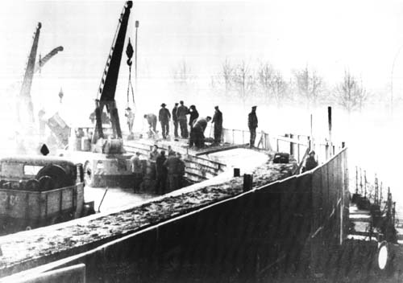

Explore key events that shaped the world we live in today.
The Cold War was a period of political and military tension between the United States and the Soviet Union, lasting from the late 1940s to the early 1990s, marked by ideological rivalry between capitalism and communism. It involved proxy wars, nuclear arms races, and global power struggles but did not escalate into direct military conflict between the superpowers.
A tense 13-day standoff between the United States and the Soviet Union over Soviet missile deployment in Cuba, bringing the world to the brink of nuclear war.
The demolition of the Berlin Wall symbolized the end of the Cold War, leading to the reunification of Germany and the collapse of communist regimes in Eastern Europe.
